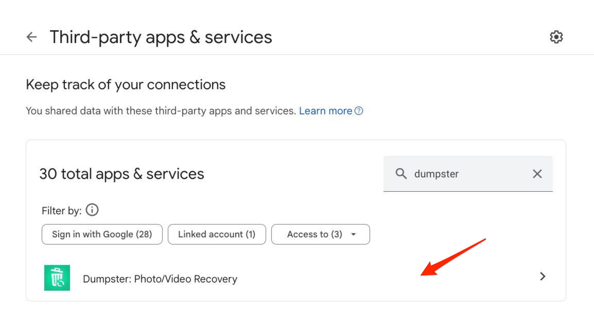
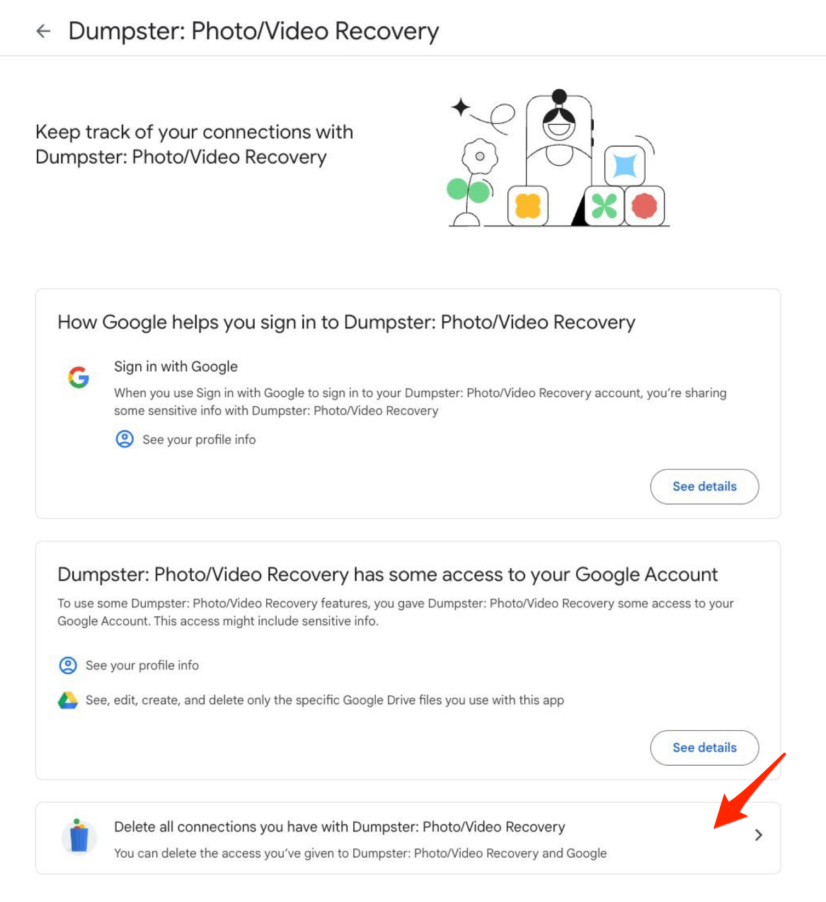

How to Delete Your Dumpster Cloud Account
Follow the steps below to remove your Dumpster cloud account by deleting the third-party app connection from your Google Account:
- Go to your Google Account Connections page at https://myaccount.google.com/connections.
- Locate the Dumpster: Photo/Video Recovery app in the list of third-party apps and services.
- Click on the Dumpster app to view more details. Here you can review the access details.

- Click on 'See details' to expand the view and then click on 'Delete all connections you have with Dumpster: Photo/Video Recovery' to remove access.

- Confirm your choice if prompted, to complete the disconnection process.
Once you have followed these steps, your Dumpster cloud account will be successfully deleted, and Dumpster will no longer have access to your Google Account.